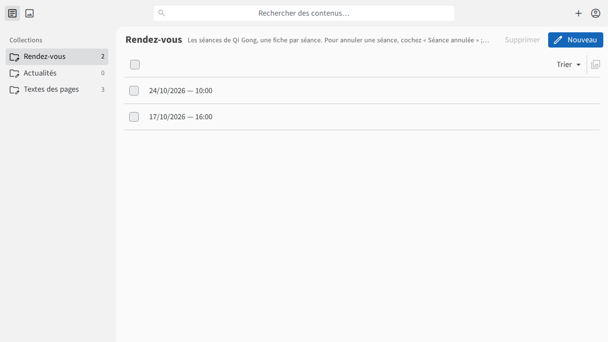
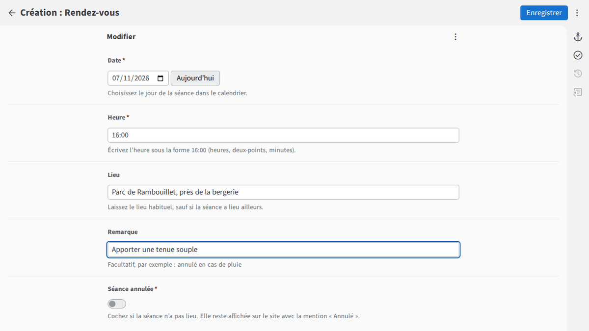
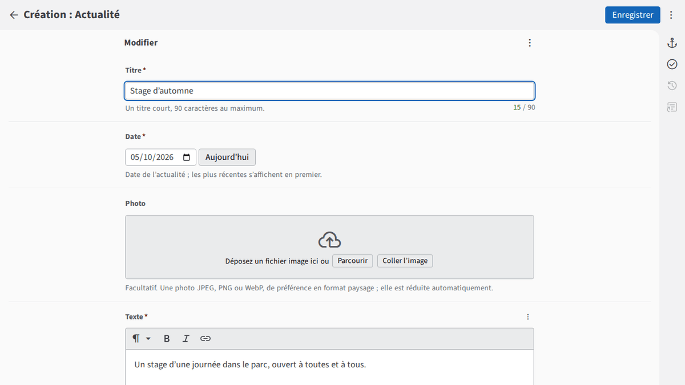
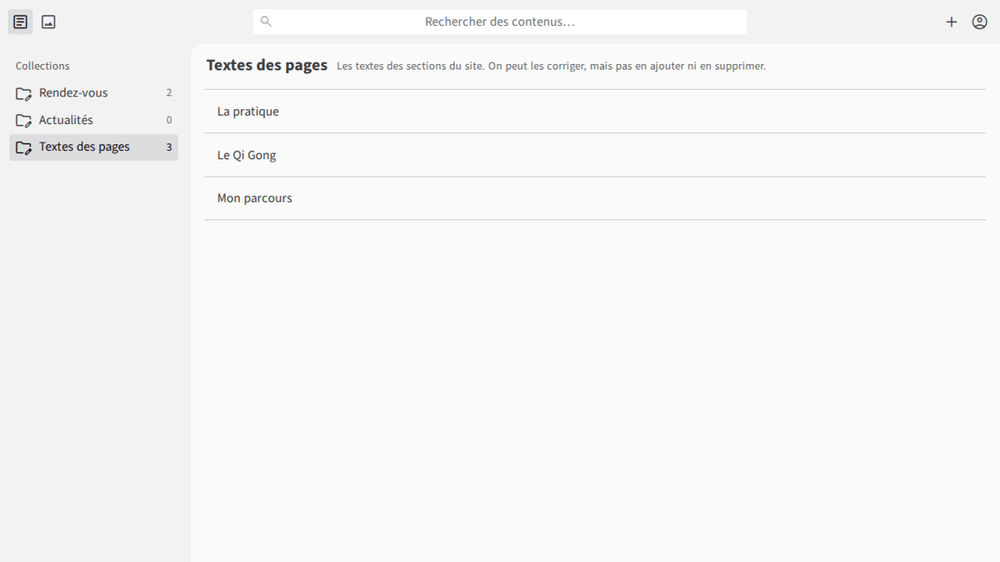

Bonjour Stéphanie, votre site est maintenant publié. Ce document vous montre comment le faire vivre vous-même : vos séances, vos actualités, vos textes et vos réglages, sans rien installer.
Votre site : https://fan2harmonie.fr
Votre administration : https://fan2harmonie.fr/admin (gardez-la dans vos favoris)
Votre boîte e-mail : contact@fan2harmonie.fr, à lire sur https://mail.ovh.net
Votre site est un site « vitrine » : il présente Fan 2 Harmonie, vos prochaines séances, vos actualités, et permet à vos visiteurs de vous écrire par un formulaire. Il est rapide, léger, sans publicité et sans cookie. Vous le modifiez vous-même depuis un navigateur (ordinateur, tablette ou téléphone), dans une page privée : « l’administration ».
Vous n’avez rien d’autre à faire que l’étape 1 : les étapes 2 à 4 sont automatiques.
GitHub est un service en ligne gratuit, utilisé dans le monde entier, qui conserve des fichiers avec tout leur historique : un grand classeur numérique qui se souvient de chaque version, de qui a modifié quoi et quand. Pour votre site, il contient vos textes, vos rendez-vous, vos actualités et vos photos publiées. L’administration s’appuie sur votre compte GitHub plutôt que de vous demander un mot de passe de plus : identification fiable (mot de passe et double authentification), sauvegarde automatique de chaque enregistrement, et possibilité pour moi de revenir à une version précédente en cas d’erreur.
| Ce que GitHub fait | Vérifie que c’est bien vous. Garde les textes et photos du site et leur historique. |
|---|---|
| Ce que GitHub ne fait pas | Il ne reçoit aucune donnée de vos visiteurs (ni les messages du formulaire, ni leurs adresses IP). Il ne publie rien de lui-même : seul votre site, après votre « Enregistrer », met à jour ses pages. |
La première fois seulement : acceptez l’invitation GitHub reçue par courriel (« View invitation », puis « Accept invitation »). Elle est valable 7 jours.
Le menu de gauche propose quatre rubriques : Rendez-vous (vos séances), Actualités (vos nouvelles, avec ou sans photos), Textes des pages (les textes du site) et Réglages du site (page d’accueil, lieu de la pratique, référencement Google).


Ouvrez le rendez-vous, activez l’interrupteur « Séance annulée », puis Enregistrer. La séance reste visible sur le site, barrée, avec la mention « Annulé » : vos élèves savent qu’elle n’a pas lieu.
Dans la liste, cochez la case devant la séance, cliquez sur Supprimer et confirmez. C’est inutile pour les séances passées : elles disparaissent toutes seules (dès le lendemain, puis lors de la mise à jour de la nuit). Deux séances le même jour sont possibles : le site les distingue tout seul.

À gauche, cliquez sur Textes des pages, puis sur la section voulue : La pratique, Les offres de séances, Le Qi Gong ou Mon parcours. Modifiez le texte comme dans un traitement de texte, puis Enregistrer. Pour changer de paragraphe, laissez une ligne vide (deux fois « Entrée »). Écrivez simplement : les boutons suffisent pour le gras et l’italique.
Les offres de séances ont leur propre page sur le site (lien « Les offres de séances » du menu) : le titre, la phrase sous le titre et le texte se modifient ici. Chaque offre commence par un titre : sélectionnez la ligne puis cliquez sur le bouton « Titre ». Le nom du lien dans le menu se change dans « Réglages du site », puis « Menu et titres ».
Dans Réglages du site, vous modifiez aussi les textes de la page d’accueil (accroche, titre, bienfaits), le lieu de la pratique, le référencement Google (titre et description affichés dans les recherches), ainsi que les mots du menu et les titres de trois sections (fiche Menu et titres). Le document « Faire connaître votre site à Google » (PROCEDURE-GOOGLE) vous explique pas à pas comment faire connaître votre site à Google. Le nom du lieu est public : écrivez un lieu public, jamais une adresse personnelle ; si le lieu change, modifiez aussi la première ligne de la page d’accueil.

Après chaque « Enregistrer », le site se reconstruit tout seul et affiche votre modification en quelques minutes : environ 2 minutes en pratique. Rechargez ensuite la page du site pour voir le changement.
Les messages écrits par vos visiteurs dans le formulaire de contact arrivent dans votre boîte contact@fan2harmonie.fr. Vous les lisez sur https://mail.ovh.net (je vous donne le mot de passe de cette boîte en main propre, jamais par message). Pour répondre, cliquez simplement sur « Répondre » : l’adresse du visiteur est déjà enregistrée. Le site, les messages et la boîte sont chez OVH, hébergeur français ; GitHub ne les voit jamais.
| Le site et les cookies | Le site ne dépose aucun cookie et n’utilise aucun suivi : vos visiteurs n’ont aucune bannière à accepter. Si un jour vous voulez ajouter des statistiques, une newsletter, des dons ou de la publicité, parlez-m’en d’abord : il y a des règles à respecter. |
|---|---|
| Les photos de personnes | Accord écrit de chaque personne reconnaissable avant publication (parents pour un enfant). |
| Ce qui est supprimé | Les fichiers du site sont gardés sur GitHub avec leur historique, que seules les personnes autorisées sur GitHub peuvent consulter. Une photo ou un texte supprimé du site reste visible dans l’historique : réfléchissez avant de publier une information personnelle. |
| Vos droits et ceux de vos visiteurs | Un visiteur peut vous demander l’accès à son message, sa suppression ou retirer son consentement : répondez dans un mois. Il peut aussi saisir la CNIL (cnil.fr). |
| Erreur de manipulation | Pas de panique : modifiez de nouveau la fiche. Je peux aussi remettre une version précédente du site (vous n’en avez pas besoin vous-même). |
|---|---|
| Accès à votre compte | Double authentification obligatoire. Mot de passe jamais communiqué. En cas de perte d’appareil : prévenez-moi aussitôt. |
| Interface en anglais | Quelques mots de l’outil restent en anglais (« Show Errors », « Restore Default ») : normal, ignorez-les. |
| Chemin de la photo | Après avoir choisi une photo, un chemin technique s’affiche (« ../../assets/actualites/… ») : n’y touchez pas. |
| Formulaire en erreur | Si un visiteur rencontre une erreur en vous écrivant, le site lui affiche votre adresse e-mail pour qu’il vous écrive directement. |